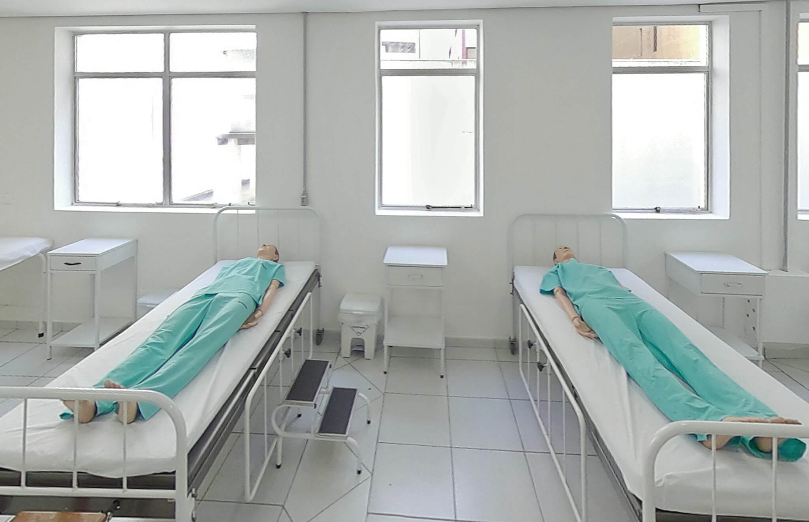
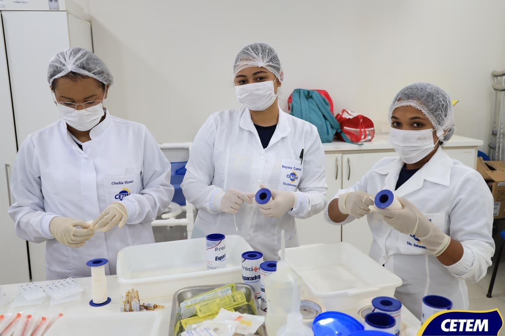

Técnico em Enfermagem
Cuidar da saúde é cuidar da vida
2
Anos
1900h
Carga Horária
99%
Empregabilidade
Cuidado Humanizado
Nosso curso de Técnico em Enfermagem forma profissionais capacitados para atuar em diversos ambientes de saúde, sempre priorizando o cuidado humanizado e a excelência técnica no atendimento aos pacientes.
Cuidados Básicos
- Sinais Vitais
- Medicação
- Curativos
- Higienização
- Primeiros Socorros
- Coleta de Exames


Experiência Prática
Oferecemos laboratórios modernos e parcerias com hospitais e clínicas da região para garantir que nossos alunos tenham experiência prática real no cuidado aos pacientes.
Áreas de Atuação
- Hospitais
- UBS
- Clínicas
- Home Care
Grade Curricular
Anatomia e Fisiologia
Estrutura e funcionamento do corpo humano
Microbiologia
Estudo de microrganismos e infecções
Fundamentos de Enfermagem
Princípios básicos da profissão
Farmacologia
Medicamentos e suas aplicações
Semiologia
Técnicas de exame físico
Enfermagem Pediátrica
Cuidados com crianças e adolescentes
Saúde da Mulher
Ginecologia e obstetrícia
Saúde Mental
Psiquiatria e psicologia aplicada